Мы печатаем с файлов в формате TIF, JPG, PSD, AI, CDR, PDF, либо дорабатываем макеты, присланные в других форматах. Если макет присылается в растровом формате (TIF, JPG, PSD), разрешение для цифровой и офсетной печати должно быть 300 dpi (точек на дюйм).
Если изображение печатается вплотную к краю изделия, его нужно продолжить за край изделия, чтобы избежать брака при резке. Выход изображения за край изделия называется вылет. На практике вылеты делают от 2 до 5 мм.
Значимыми элементами называют текст, логотипы, изображения и другие элементы макета, которые должны полностью уместиться на изделии. Минимальное расстояние от края изделия до таких элементов должно быть не менее 3 мм.
Печатная машина не печатает в цветовой палитре RGB. Эта палитра только для мониторов. Для печати используется палитра CMYK. В принципе, файл в RGB можно запустить на печать, при этом компьютер сам пересчитает его в CMYK, но цвета при этом меняются, иногда существенно.
Во-первых, на экране вы видите не цвет, а свет, состоящий из трех лучей: зеленого, синего и рубинового, а на бумаге вы видите именно цвет, состоящий из четырех красок CMYK: голубой ©, малиновой (M), желтой (Y) и черной (K).
Во-вторых, монитор должен быть откалиброван с помощью специального прибора. Причем делать такую калибровку нужно регулярно.
Чтобы гарантировано получить требуемый цвет, нужно делать макет в палитре CMYK.
Существуют ограничения по минимальной плотности цвета, воспроизводимой на печати. Поэтому плотность цвета (CMY) в макете должна быть более 5%. Для черного цвета (К) плотность должна быть еще выше — 12%.
Для устранения этого эффекта черно-белый макет должен быть переведен в режим Grayscale.
Изображение не пропадает, оно оказывается скрытым за другим слоем из-за неправильно подготовленного макета. Чтобы напечатанное изображение полностью совпадало с макетом, слои в файле должны быть слиты перед печатью.
При подготовке макета нужно составить серый цвет из всех четырех цветов. Это называется «Композитный серый»
После печати на офсетной машине краске надо дать время высохнуть, и только потом напечатать другую сторону. И снова дать высохнуть перед резкой. Если этого не сделать, то не до конца высохшая краска будет отпечатываться на оборотной стороне листа. Это называется «отмар». Если макет очень темный, то для предотвращения «отмара» нужно дополнительно наносить слой лака на каждую из сторон.
Фальцовкой называют сложение листа бумаги по линии сгиба. В месте сгиба бумага деформируется, и сгиб выглядит неаккуратно. Чем толще бумага, тем заметнее этот дефект. Поэтому на листе предварительно выдавливают канавку (углубление радиусом 1-1,5мм). Это и называется биговкой.
Чтобы рамка была ровной, необходимо закладывать в макет расстояние до края листа не менее 5 мм.
Количество страниц в брошюре должно быть кратно 4-м , так как брошюра скрепляется разворотами, а не отдельными листами. Если это не так, добавляются пустые страницы на внутреннюю сторону обложки или в конец документа.
Тиражу надо дать время высохнуть первый раз после печати, затем второй раз после ламинации, и только потом отправлять на резку.
Цена изделия определяется не только количеством затраченных материалов, но и количеством затраченного времени. Допечатная подготовка и послепечатная обработка одинаковая вне зависимости от тиража визиток. Поэтому чем больше тираж, тем дешевле единица продукции.
 
